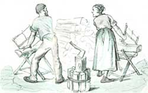
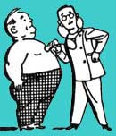

HOME HEALTH REMEDIES
Doctors share more of their practical home remedies.
After spending a few hours hacking away at a pile of fuelwood, your knees, elbows, and wrists may feel slightly... overextended. Of course, a little discomfort should be expected under those circumstances, but soreness could be attributed to tendinitis as much as to harmless muscle pain. So how do you tell the difference?
Tendinitis is an inflammation of the tendon - the cord that attaches muscle to bone. "So that is where you would feel the pain," says Robert E. Leach, M.D., professor and chairman of the Department of Orthopedic Surgery at Boston University Medical Center and chairman of the U.S. Olympic Committee on Sports Medicine and Sports Science. A pulled muscle, on the other hand, occurs in the "belly" of the muscle and hurts only when you stretch it. Although avoiding overexercising and overtraining by listening carefully to your body and ceasing painful activity immediately is the first step in dealing with painful muscles and joints, there are many therapeutic steps to take in the event of an injury.
Put on an ice pack
"Ice decreases inflammation by decreasing blood flow to the injured area," says Steven F. Habusta, D.O., of Parkwood Orthopedics in Toledo. "There's no such thing as too much ice."
You can buy an ice pack made of gel, or you can make a pack by putting ice in a sealed plastic bag. Another alternative is to use a bag of frozen vegetables. Dr. Habusta suggests placing a terry cloth towel between your skin and the ice pack to prevent burns or blisters.
Once the swelling of the immediate injury has gone down, applying heat in the form of pads, liniments, or warm compresses can help keep the affected tendons from stiffening as well as ease your pain. Do not use a heating pad with liniments though, as this may result in an extremely painful burn.
Stretch it
"Careful stretching of the affected muscle and tendon so that it doesn't get too tight is important in both the treatment and prevention of tendinitis," says Dr. Leach. "But don't stretch so much that you cause pain. Pain usually means that you are tearing tissue." Stretch your sore muscle each day, using smooth and slow motions. For that matter, make stretching a daily morning routine for your entire body and you might well keep muscle and tendon injuries from happening in the first place.
Down an antiinflammatory
"Aspirin and ibuprofen (e.g., Advil) are immediately available to most people," says Dr. Leach, "and they're both antiinflammatory. Take either of them (not both) a couple of times a day." But pay attention to the amount that you take. "If you notice that you are not getting better or that you've been increasing the amount, it's obvious that you should be doing something else," says Dr. Leach. Also, do not give aspirin to children because of the risk of Reye's syndrome.
Elevate it
If you can rest the painful limb or joint above heart level, you'll ease the swelling that often accompanies tendinitis. If you have tendinitis in your leg, for instance, rest it on top of a pile of pillows.
Sling it
For tendinitis in your shoulder, you can place the affected arm in a cloth sling as you would a broken arm. The idea is to keep the arm immobile, so the shoulder doesn't move around.
Pamper yourself with a massage
Not only is massage very soothing, it also helps to relax the muscles and tendons, so they can be stretched very easily, says Dr. Leach. Although a massage is not a cure, it will help you feel more comfortable while the inflamed tendon is healing.
Tendonitis
Does the pain get worse every time you pick up an ax? Is it getting progressively more difficult to open that jar of mayonnaise?
If the pain is getting worse or lasting a longtime, you should see a doctor, according to James A. Nicholas, M.D., director of the Department of Orthopedics at Lenox Hill Hospital in New York City. Dr. Nicholas notes that tendinitis can have many origins, some more serious than others: "It could be caused by injury, by gout, by rheumatoid arthritis, or by certain metabolic disorders."
Broken Bones
The most important thing you should know about broken bones is that they require immediate medical attention. If you even suspect a fracture, have a doctor check it out. Otherwise, you may further damage the broken bone. There's also risk of infection and delayed healing.
Sir Isaac Newton may well have figured out why apples fall down and not up, but the rest of us have known the hard truths about gravity ever since the first person hit the ground. With 208 bones in the human body, there's tremendous potential for breakage. If you're on the mend from such a fracture, there are many ways you can speed healing and make yourself more comfortable.
Butt out
Smoking can delay the healing of bones - it can take up to five months longer for serious fractures and less for minor breaks, says orthopedic surgeon George Cierny III, M.D., of Atlanta. He has shown experimentally that nicotine and other substances in cigarette smoke reduce the amount of oxygen reaching bone tissue, causing the delay in healing. So if you're a smoker, expect a longer-than-average healing time.
Watch what you drink
It's still unknown what effect alcohol and caffeine have on healing, but researchers know that people who consume beverages containing these two substances are more likely to endure fractures. That's because caffeine and alcohol affect bone mass and interfere with calcium absorption, which builds stronger bones.
"In our study, there was an increased risk of getting fractures in those who drank more than four cups of coffee daily or about two glasses of alcohol - wine, beer, or a highball," says Graham A. Colditz, M.D., a researcher at Harvard Medical School in Boston.
RICE is nice
On the first-aid front, most experts suggest some big chill - even after your doctor has treated you. The acronym RICE - rest, ice, compression, and elevation - describes the best way to hasten healing and prevent further damage. If you have a minor fracture that's protected by an air cast or soft cast, your doctor might let you remove the cast now and then to apply ice directly. "Put a bag of frozen vegetables on the fracture for about 20 minutes, then remove it for 10," suggests Steven Subotnick, D.P.M., a sports podiatrist in Hayward, California, and author of Sports and Exercise Injuries . "But make sure you put a washcloth between your skin and the ice bag to prevent an ice burn." Since you want to avoid pressure on the area, the cold compress should be applied lightly. Even if you can't take off a soft cast, You can apply ice to the outside of the cast, and it will help chill the area underneath.
Stop itchy casts
Bothered by that annoying itch from inside a cast? There's a big temptation to simply go for it and itch away to find relief. That might feel good for a second, but it's no solution. Scratching with a ruler, clothes hanger, or other device will just produce more itching from the tiny cuts caused by your scratching.
"Instead, simply elevate the fractured area so that it's above the level of your heart," suggests Philip Sanfilippo, D.P.M., a San Francisco podiatrist who specializes in sports injuries and treatment. "By doing that, you'll diminish blood flow to the area and reduce swelling. Often that's enough to relieve the itching."
Adapted from The Doctor's Book of Home Remedies II (Rodale Press, 1993) by Sid Kirchheimer. Copyright © 1993 by Sid Kirchheimer.
|
 |
 |
|